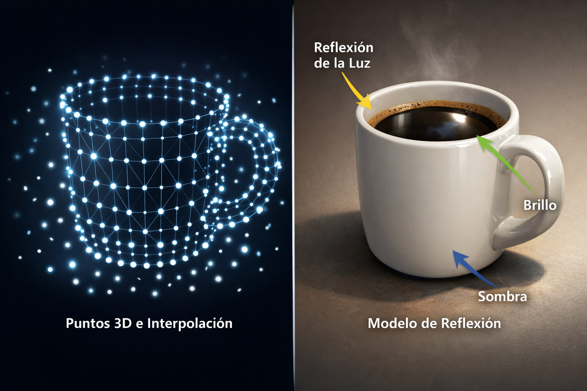
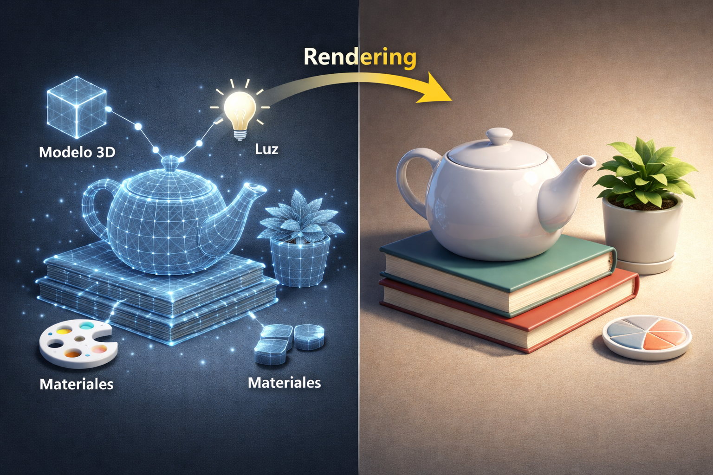
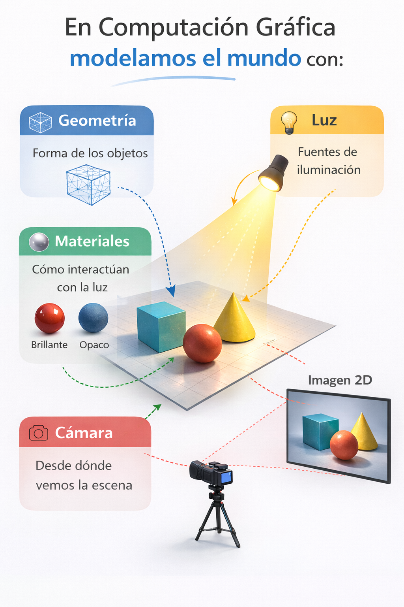
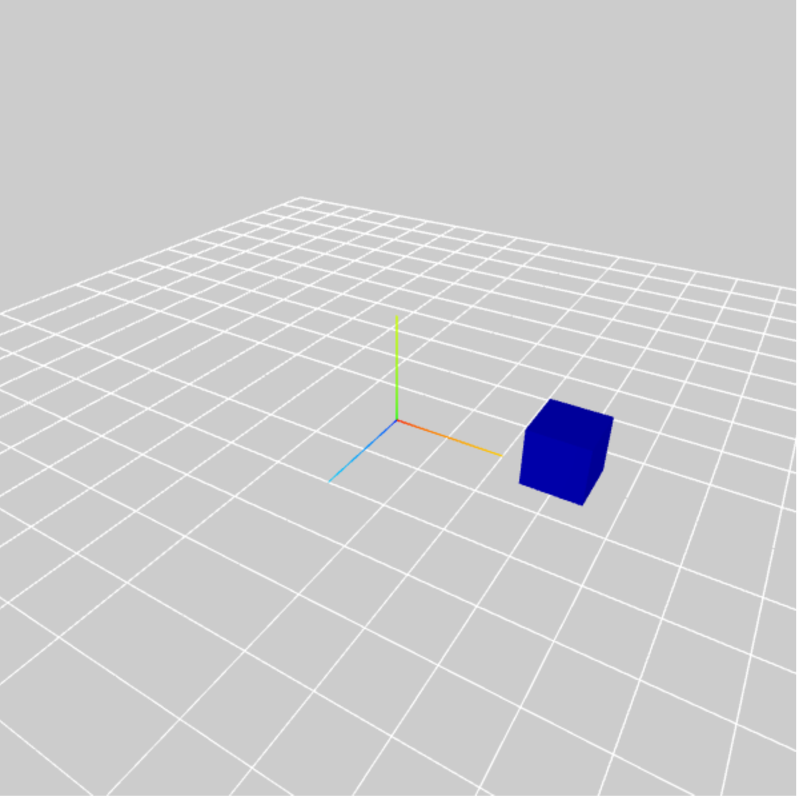
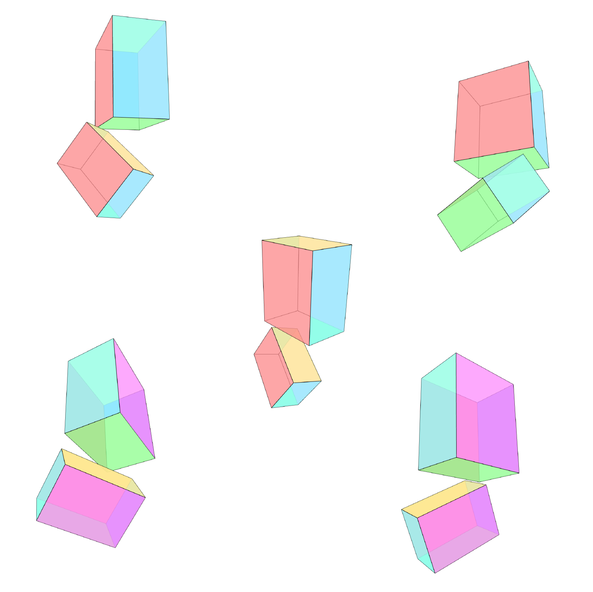
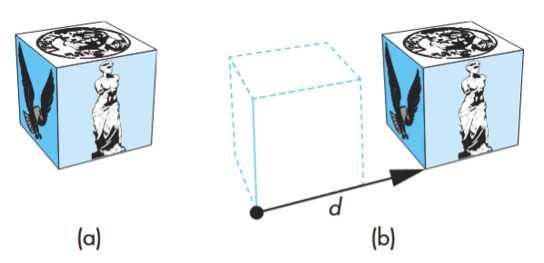
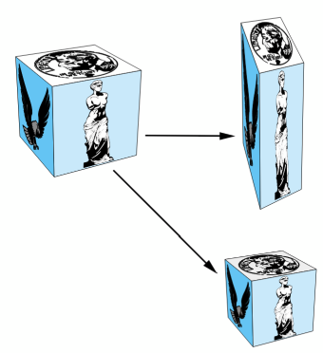
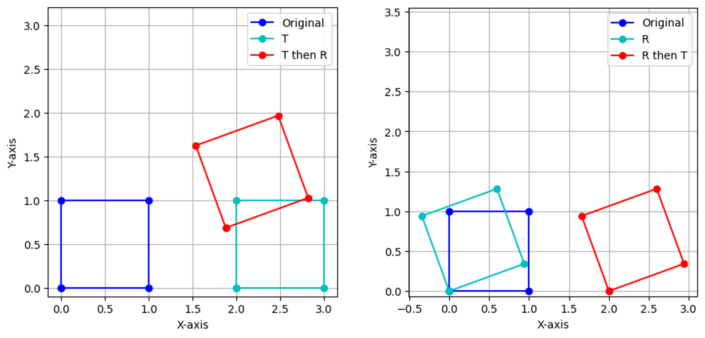
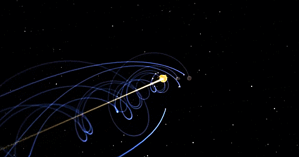

IIC3912 - Tópicos Avanzados de Gráfica Computacional
Francisca T. Gil-Ureta ⋅ 2026
Clase 1 | Introducción a la Gráfica Computacional
¿Cómo modelamos un mundo digital?

¿Qué es la Gráfica Computacional?
Gráfica computacional es el área de la computación la cual estudia todo lo relacionado con sintetizar y editar imágenes digitales.
El foco principal de nuestro curso es grafica tridimensional (3D graphics), donde la mayoría del esfuerzo está en producir un modelo 3D de la escena.
Podemos dividir el área de gráfica computacional en las siguientes sub-areas:
Modeling
Es el área que estudia la especificación matemática de las propiedades de formas y apariencia de manera que puedan guardase en un computador.
Rendering
Es el área de la computación gráfica que estudia cómo generar una imagen 2D a partir de la descripción de una escena tridimensional (3D). El objetivo del rendering es calcular cómo se vería nuestra escena desde un punto de vista específico y producir la imagen correspondiente.
Animation
Es la técnica usada para crear la ilusión de movimiento mediante una secuencia de imágenes. La animación utiliza el modelamiento y el rendering, pero agrega el punto clave que es el movimiento en el tiempo.

Por ejemplo, una taza de café podría modelarse como un conjunto de puntos 3D ordenados junto con alguna regla de interpolación para conectar los puntos y un modelo de reflexión que describe cómo la luz interactúa con la taza.

Photorealistic vs Non-Photorealistic Rendering
El rendering no siempre busca generar imágenes foto-realistas. En muchos casos, el objetivo principal es transmitir correctamente la forma y la estructura de los objetos, proporcionando percepción de profundidad y volumen, aunque los colores, las texturas o el estilo visual sean simplificados o estilizados.
Esto permite visualizar modelos 3D de forma clara, incluso cuando el realismo visual no es la prioridad.
💡El término “rendering” proviene originalmente del mundo de las artes visuales. Allí se utilizaba para describir el proceso de añadir color, sombras, iluminación y texturas a un dibujo, con el fin de darle apariencia tridimensional y mayor realismo.

La simulación física (physics simulation) es una técnica utilizada dentro de la animación que calcula el movimiento de los objetos utilizando leyes de la físicas, en lugar de definir manualmente cada movimiento.

En computer graphics, simplificamos el mundo real mediante cuatro componentes principales
Geometría
Describe la forma de los objetos usando representaciones matemáticas como puntos, vectores, triángulos y mallas.
Materiales
Describen cómo se comporta la superficie de los objetos frente a la luz (por ejemplo, si una superficie es brillante, opaca o metálica).
Luz
Representa las fuentes de iluminación que determinan cómo se iluminan los objetos en la escena.
Cámara
Define desde dónde observamos la escena, lo que determina qué parte del mundo se proyecta en la imagen final.
⚠️Estas abstracciones no existen directamente en APIs de bajo nivel como OpenGL. Sin embargo, son conceptos fundamentales y muy comunes en computación gráfica. Aparecen constantemente en algoritmos de gráficos, motores gráficos (graphics engines), libros de computación gráfica y sistemas de modelado.
Dos bolas en movimiento que emiten luz dentro un cubo, renderizado en tiempo real
V
Dos esferas con luces adentro que se mueven en una caja. La cámara es móvil.
M
2 esferas "cortadas" con 2 fuentes de luz esfericas en su interior rebotando dentro de un cubo. Hay una camara que se puede desplazar dentro del cubo.
J
Esferas que emiten luz en un patrón que crea su forma mientras se mueven en una escena
J
Tiene una sola cámara, dos objetos tridimensionales en movimiento y que emiten luz, lo que permite ver la caja en la que están contenidos
F
La escena presenta geometría de la superficie "cortada" de dos esferas. También tienen un emisor de luz al centro. Tienen dos materiales (interna/refleja) y externa (opaca)
V
Luz centrada en la geometría de dos esferas y movimiento de cámara dinámico
C
Dos esferas del mismo material con luces de color diferente, rebotando en una pieza con forma de cubo
S
Una cámara para visualizar como dos fuentes de luz tapadas se golpean
G
dos esferas “cortadas” con un “núcleo” que emite luz en el centro de cada una. las esferas rotan y giran.
M
Dos luces, una roja y una azul dentro de esferas permeables con franjas transparentes dentro de una caja cuadrada y una sola cámara
F
Hay 2 objetos en la escena que emiten luz y tienen un material metálico. Ademas la cámara se puede mover
S
Múltiples vistas (camara móvil). Iluminación se desplaza con las bolas
T
Dos esferas que emiten luz de distintos colores dentro de una caja
G
Hasta ahora hemos hablado de qué hay en la escena: objetos, luces, materiales y una cámara. Pero no hemos hablando de donde está cada object, cómo está orientado, ni cuál es su tamaño.
Sistemas de coordenadas en una escena 3D
Para representar una escena necesitamos definir sistemas de coordenadas que nos permitan describir matemáticamente dónde están los objetos y cómo están orientados.

World Space
Este es el sistema de coordenadas global de la escena, que define el origen del mundo (0,0,0) y las tres dimensiones del espacio (x, y, z)
Todos los objetos de la escena se ubican finalmente en relación a este sistema de coordenadas.
Object Space
Sin embargo, cada objeto también tiene su propio sistema de coordenadas llamado Object Space.
Normalmente, la geometría del objeto se define centrado cerca del origen de su propio sistema.

Para agregar un objeto a la escena debemos colocarlo dentro del World Space. Esto se hace especificando su pose.
La pose describe cómo transformar el objeto desde su Object Space hacia el World Space, mediante tres operaciones fundamentales:
- Translación → dónde está el objeto en el mundo
- Rotación → cómo está orientado
- Escala → qué tamaño tiene
Estas transformaciones permiten posicionar y orientar cualquier objeto dentro de la escena 3D.

Translación
Mueve todos los puntos del objeto en la misma dirección y en la misma cantidad.
d = np.array([1.0, 2.0, 3.0])
P = P + d

Rotación
Rotación 3D en torno a un vector/eje fijo
R = rotation_matrix(angle, axis)
P = P @ R

Escala
La Escala (scaling) puede hacer el objeto más grande o más pequeño.
S = np.diag([vx, vy, vz])
P = P @ S
Uniform Scaling: el factor de escalamiento es el mismo en todas las dimensiones (vx= vy = vz)
Non-Uniform Scaling: al menos un factor es distinto.
En el ejemplo de la izquierda, primero trasladamos el cuadrado azul, d=(2.0, 0.0), y luego lo rotamos 20 grados
P' = (P + d) @ R
En el ejemplo de la derecha, primero rotamos el cuadrado azul 20 grados, y luego lo trasladamos d=(2.0, 0.0)
P' = (P @ R) + d

En computer graphics, el orden estándar de las operaciones es
Scale luego Rotate luego Translate
Las librerías de computer graphics usan este orden.

En lugar de rotar el cubo directamente, creamos un objeto padre (o un nodo contenedor) ubicado en el centro del mundo. Luego colocamos el cubo como hijo de ese objeto padre, pero desplazado hacia un lado.
Ahora, si rotamos el objeto padre, el cubo se moverá junto con él y describirá un movimiento circular alrededor del centro, en lugar de rotar sobre sí mismo.
En una jerarquía de transformaciones:
- Las transformaciones del padre afectan a los hijos.
- Los objetos hijos heredan las transformaciones de sus padres.
Esto nos permite construir movimientos más complejos combinando traslaciones, rotaciones y escalas dentro de una estructura jerárquica.
Como mover un cubo (en realidad aplicamos conceptos como modeling, rendering y animacion :O)
g
La jerarquía de transformaciones, la relación entre parents y childs y cómo el cambio de una afecta a la otra. Eso y los conceptos de modelamiento, rendering y animación.
A
Aprendí conceptos basicos de THREE para crear y manipular un sistema con objetos como luces y figuras geometricas, jerarquías entre estas y como manipularlas :D
J
Aprendí que existe una jerarquía de transformaciones (no sabía que existía)
M
La jerarquía de las transformaciones y lo básico de cómo funcionan, también las características de modelamiento, luz, material y cámaras. También que todavía odio javascript >:(
I
Para rotar un objeto respecto a una coordenada se hace un objeto padre. Como el sol con los planetas :)
M
Como modificar la rotacion y la luz que impacta en un modelo 3D y como las jerarquías afectan estás transformaciones
V
Jerarquía de transformaciones es clave
S
modelamiento matemático, jerarquías y como aplicarlas a código :D
C
la puesta en escena y la jerarquía de objetos dentro de three.js
f
Como se caracteriza un modelamiento 3D, tales como la luz, escena, materiales y geometria. Asi tambien un poco de como se usa THREE.
C
modelling, rendering, animation. Cámaras, puntos de iluminación y composición de objetos. Un poco js
f
Aprendi a crear y agregar objetos a una escena 3D, a asignarles transformaciones y darles una jerarquía.
S
Que la visualización de gráficos 3D se basa en una jerarquía estricta de parents y childs
h
Three.js es bien poderoso como mini unity para animación
V
Integrarlo con simulaciones de robótica
T
Optimizacion de escenas para robótica
V
Simulaciones y desarrollo de videojuegos :D
J
La curiosidad de aprender de esta area de computación, y al final del curso hacer una modelación y/o renderización de algo entretenido.
C
Aprender los "inner workings" de la generación de contenido 3D para aplicarlos creativamente en animación/gamedev
V
simulaciones en física
f